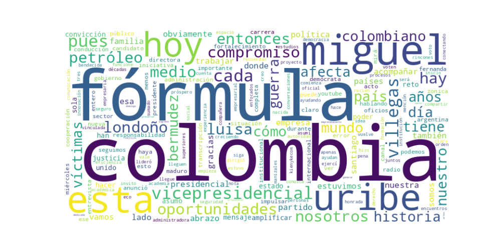

Seguidores: 640
Reporte de Análisis de Comunicación Política - Luisa Fernanda Villegas (Fórmula Vicepresidencial)
1. Perfil de Comunicación: La comunicación de Luisa Villegas se caracteriza por un tono formal pero accesible, que busca proyectar seriedad institucional sin perder cercanía. Utiliza un lenguaje claro y directo, combinando términos propios de la gestión pública ("fortalecimiento institucional", "políticas de reactivación económica") con mensajes emocionales y de conexión ciudadana ("abrazo a cada historia", "una sola Colombia"). Su estilo es propositivo y de tono alto, enfocado en presentar una imagen de preparación técnica y compromiso emocional con el país.
2. Temas Principales: 1. Seguridad y Orden: Lo enmarca como un retorno a principios de autoridad y justicia social. Ejemplo: "Vuelve la seguridad con autoridad, orden y justicia social." 2. Oportunidad Económica y Prosperidad: Centrado en generar crecimiento y conectar sectores productivos. Ejemplo: Trabajar por "un país seguro, próspero y unido" y en "cómo llevar iniciativas [económicas] a más territorios y convertirlas en oportunidades reales". 3. Fortalecimiento Institucional y Eficiencia del Estado: Presentado como base para el desarrollo. Ejemplo: Compromiso con un país "donde el Estado funcione con eficiencia". 4. Victimas y Memoria Histórica: Aborda el tema con un lenguaje de empatía y compromiso tangible, más allá del simbolismo. Ejemplo: "Colombia debe estar del lado de las víctimas... Tiene que ser un compromiso real con la verdad, con la justicia". 5. Unidad Nacional: Un concepto transversal, presentado como antídoto a la división. Ejemplo: Uso recurrente del lema "Una sola Colombia" y llamado a trabajar "por un país... unido".
3. Tono y Sentimiento Dominante: El tono general es esperanzador y propositivo, pero con una base de crítica severa a la situación actual (ej. gestión de Ecopetrol, olvido de las víctimas). Combina un mensaje de optimismo sobre el futuro ("esto apenas empieza") con un llamado a la acción concreta y responsable. En el diálogo internacional, muestra un tono analítico y preocupado, pero buscando alianzas y rutas de cooperación.
4. Palabras Clave de Poder: * "Una sola Colombia" / #UnaSolaColombia: Su eslogan central, enfatizando unidad. * "Oportunidades (reales)": Nexo entre economía y bienestar social. * "Compromiso (real)": Usado para diferenciar su propuesta de la mera retórica, especialmente en temas sensibles como las víctimas. * "Fortalecimiento institucional": Pilar de su discurso de gestión. * "Autoridad, orden y justicia social": Tríada que define su enfoque de seguridad.
5. Conclusión Estratégica: La estrategia de comunicación de Luisa Villegas busca posicionarla como el equilibrio perfecto entre la técnica experta y la sensibilidad social. Su discurso está dirigido a un electorado de centro-derecha que valora la experiencia gerencial, el orden y la seguridad, pero que también busca un mensaje de inclusión y reconciliación nacional. Al enfatizar su experiencia en conectar lo público, lo académico y lo empresarial, y al hablar desde la empatía con las víctimas, busca ampliar su base más allá del núcleo uribista tradicional. En esencia, su comunicación evoca una imagen de transición ordenada, eficiencia con rostro humano y un nacionalismo unificador, buscando capitalizar el descontento con la gestión actual ofreciendo una alternativa que mezcla continuidad en algunos principios con un renovado enfoque en la unidad y la oportunidad para todos.
Reporte de Análisis de Comunicación Política de Élite
1. Resumen del Patrón de Éxito: El éxito del contenido se basa en una fórmula dual de conexión emocional y confrontación política. Los videos más efectivos logran combinar un mensaje de empatía y reconocimiento hacia grupos específicos (víctimas, ciudadanos comunes) con una crítica directa y clara al gobierno actual o a ideas opuestas. No es solo un discurso propositivo; es un relato que contrasta su compromiso con la falla percibida del adversario, creando un potente "nosotros vs. ellos".
2. Tácticas de Comunicación Clave: * Apelación Emocional con Anclaje Concreto: No habla de "las víctimas" en abstracto. Personaliza el mensaje nombrando a "Miguel" y su familia, transformando una cifra en una historia humana. Esto genera identificación inmediata y autenticidad. * Contraste y Construcción de un Adversario Claro: Define su posición en oposición a un "otro" claramente identificable: la inacción del Estado ("acto simbólico más"), el fracaso del gobierno actual ("Ecopetrol está casi que quebrada") y, en un sentido amplio, la gestión de Gustavo Petro. Este marco de confrontación simplifica la narrativa y moviliza a la base. * Legitimación a Través de la Experiencia y el Equipo: La presentación de la fórmula vicepresidencial no es un mero anuncio. Es una táctica de validación. Se detallan los méritos, trayectoria empresarial y académica de Luisa Villegas, construyendo una imagen de seriedad, capacidad técnica y preparación, que contrasta con el discurso de "improvisación" que atribuyen al rival. * Uso de Plataformas y Lenguaje Híbrido: Aparecen en medios tradicionales (entrevistas en radio/YouTube), pero el contenido se adapta y fragmenta para Instagram. El lenguaje es directo, mezcla términos técnicos ("transición de energías limpias") con un tono conversacional ("nos calma un poquito esa espuma"), accesible pero con autoridad.
3. Temas de Mayor Resonancia: 1. Memoria y Justicia para las Víctimas: El mensaje más potente es el que abraza la causa de las víctimas, prometiendo prioridad real frente a la "simbolización" que atribuyen a otros. 2. Gestión Económica y Energética: La crítica al manejo de Ecopetrol, la producción petrolera y las oportunidades perdidas genera alta interacción al tocar un punto de dolor tangible. 3. Seguridad y Orden Internacional: Vincular la inestabilidad mundial con la vulnerabilidad de Colombia, y celebrar acciones fuertes contra figuras como Maduro, resuena en un electorado preocupado por la seguridad. 4. Presentación de un Equipo Competente: El anuncio de la fórmula vicepresidencial, enfatizando experiencia y no solo lealtad política, es en sí mismo un tema de éxito, mostrando solidez de proyecto.
4. Perfil de la Audiencia Implícita: El discurso apunta a una audiencia ya simpatizante o persuadible de centro-derecha, que necesita ser movilizada. No busca explicar principios básicos, sino reforzar convicciones y dar argumentos emocionales y técnicos para la acción (votar, compartir). Se dirige a quienes: * Valoran el orden, la seguridad y una gestión económica "seria". * Están desencantados con el gobierno actual y buscan una alternativa con credenciales de capacidad. * Se emocionan con un mensaje que combina patriotismo ("una sola Colombia") con una crítica estructurada.
5. Conclusión Estratégica: La clave fundamental de su poder discursivo radica en la capacidad de enmarcar su candidatura no solo como una opción política, sino como un acto de reparación moral y técnica para el país. Su éxito en redes no viene de promesas grandilocuentes, sino de posicionarse como el antídoto contra dos males percibidos: la indiferencia emocional hacia el dolor de los ciudadanos (víctimas, economías familiares) y la ineficiencia técnica del establishment gobernante. Lo que lo diferencia del discurso tradicional es que este mensaje se entrega en un formato emocionalmente crudo y personal, pero respaldado por la exhibición de un equipo que proyecta solvencia técnica. No es pura pasión ni puro dato; es la fusión de ambas en un relato de competencia con corazón.

Caption: Hoy abrazo a Miguel, a su familia y a cada historia que no puede ser olvidada. Colombia debe estar del lado de las víctimas. Este día no puede ser un acto ser un acto simbólico más. Tiene que ser un compromiso real, compromiso con la verdad, compromiso con la justicia
Likes: 59 | Comentarios: 1 | Reproducciones: 646
Ver en InstagramCaption: Soy Luisa Villegas, fórmula vicepresidencial de Miguel Uribe. Asumo este compromiso con responsabilidad y con la convicción de trabajar por un país con más oportunidades para todos. Creo en una sola Colombia. 🇨🇴 #migueluribe #unasolacolombia
Likes: 124 | Comentarios: 18 | Reproducciones: 1,816
Ver en InstagramCaption: El candidato presidencial Miguel Uribe Londoño (@migueluribel) anunció a Luisa Fernanda Villegas (@luisavillegasa) como su fórmula vicepresidencial. Esta es su historia. Conozca más, en Kienyke.com #colombia #elecciones2026 #candidatos
Likes: 174 | Comentarios: 33 | Reproducciones: 14,370
Ver en Instagram